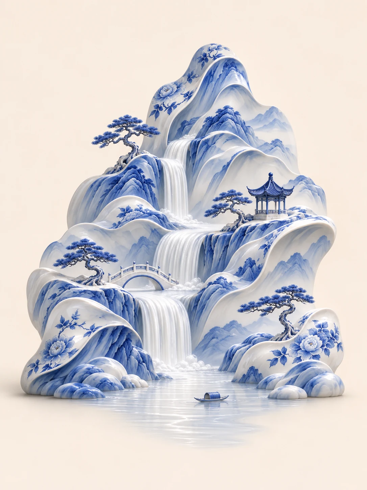
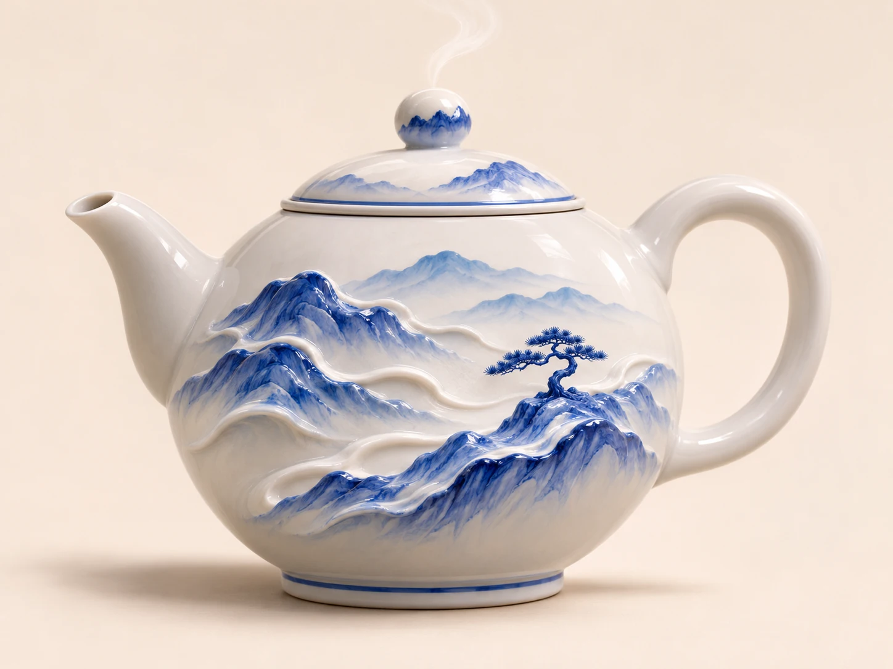
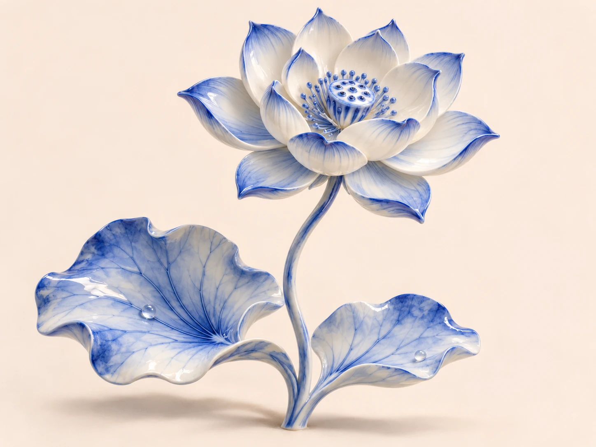

山水

每题材一个样本，不证明稳定迁移。
上方为程序合成微动，非AI视频。
从青花山水参考出发，研究瓷质体积、色彩、通路与留白怎样沉淀为作品和交付方法。三题材静帧、五段AI原片、两段校正短片、概念展示页与可编辑模板，验证了样本制作、局部修正和网页复用。价值在作品资产、可追溯经验与交付工具；真实商品、地方或故事的保真和商业效果仍待验证。
公开版保留作者出处与文字观察；原帖封面、配色图和视频不随公开包分发，本地归档保持不变。访问 Zidan 子丹原帖 ↗
作者标注静图使用 Gemini、视频使用 Grok Imagine，具体版本与原始提示词未知。我们的静帧是文字生成，没有将原作图像传入模型；三支程序预演不计作AI视频。

每题材一个样本，不证明稳定迁移。
上方为程序合成微动，非AI视频。

每题材一个样本，不证明稳定迁移。
上方为程序合成微动，非AI视频。

每题材一个样本，不证明稳定迁移。
上方为程序合成微动，非AI视频。
原片均保留音轨与曝光问题，播放默认静音。第三轮仅执行茶器，山水没有提交；准确参数和验片记录可从统一入口检索。
水景有了变化，冻结边界还不够严格。
瀑布末端、局部水纹、水面涟漪和薄雾有时序变化，主要山体与亭桥保持可辨。小舟却向左移动，约2秒后高处出现新的雾丝；开场曝光下降。局部动态的范围仍有外溢，不能把这次样本当作所有非目标区域都已锁定。
Use the supplied image as the exact opening frame and visual anchor. Create one continuous five-second locked-camera shot of this blue-and-white porcelain landscape. Preserve the composition, mountain silhouettes, solid porcelain volumes, cobalt decoration, pavilion, arched bridge, trees, single boat, warm ivory background, lighting and negative space. Only animate water inside the three existing white waterfall channels: a gentle continuous downward flow following the existing drop and riverbed, with small coherent ripples where each waterfall meets the pool. The surrounding porcelain terrain stays completely rigid. Keep the water white and pale blue, retain readable detail and restrained motion. A very thin veil of mist may drift slowly close to the water, without hiding architecture or changing the mountain shapes. The boat remains in its existing position for this controlled test. No pan, zoom, orbit, cuts or transition. No mountain breathing, melting ceramic, crawling patterns, deformation of the pavilion or bridge, moving trees, extra boats, new objects, flickering colors or aggressive spray. No text, subtitles, music, speech or sound effects. The purpose is to test localized fluid motion while all structural anchors remain stable.
壶形保住了，蒸汽还不够持续。
第一轮约3秒仍能辨认细蒸汽，4–5秒的放大检查帧中已难以辨认，未覆盖完整5秒。壶嘴、把手、盖缝与山水浮雕整体保持，开场发生了明显曝光下降。
Use the supplied image as the exact opening frame and visual anchor. Create one continuous five-second locked-camera shot of this blue-and-white porcelain teapot. Preserve the complete teapot silhouette, spout opening, open handle loop, lid seam, round body, foot, landscape relief, tiny pine tree, cobalt decoration, lighting, background and negative space. Animate only the existing faint steam above the lid knob. The steam rises slowly from the same origin, gently curls, thins and dissipates. Keep it delicate, translucent and small enough to leave the knob and lid readable. The teapot, lid, relief mountains, white glazed channels and all painted patterns remain absolutely still. No water pours from the spout, no liquid flows over the relief, and the lid does not lift. No camera movement, zoom, object rotation, cuts or transition. No wobbling geometry, breathing body, distorted spout or handle, pattern sliding, moving miniature trees, changing highlights, extra objects, color flicker or billowing smoke. No text, subtitles, music, speech or sound effects. The purpose is to test subtle steam motion while porcelain geometry and surface identity remain stable.
小舟和高处雾气改善了，曝光与原生无声仍未达标。
第二轮小舟的左右漂移明显减小，高处背景没有再出现第一轮那样的新增雾丝。亭桥与山体保持可辨，落水泡沫和池面有变化；小舟外形、倒影及周围水纹仍有细小变化，不能记为绝对冻结。开场变暗与非零音轨仍存在。
Use the supplied image as the exact opening frame. Make one continuous five-second locked-camera shot of this blue-and-white porcelain landscape. Preserve the complete composition, mountain silhouettes and ceramic volumes, cobalt patterns, pavilion, arched bridge, trees, the single small boat, warm ivory background and all negative space. The single small boat is moored and motionless throughout the entire shot. Freeze its screen position, scale, heading, hull shape, reflection and the contact waterline immediately against the hull. It must not drift left or right, bob, rotate or be carried by the water. The mountains, pavilion, bridge, trees and painted patterns also stay rigidly fixed. The only motion is gentle continuous downward water flow inside the three existing white waterfall channels, following their established drops and riverbed, plus very small ripples within the existing pools directly below each fall. Keep white and pale-blue water detail readable. Any mist is confined to a tiny, thin, translucent patch immediately around the existing waterfall impact points. No new mist high in the scene, above the mountains, beside the upper peaks or in the right-hand background; no expanding cloud or drifting fog crossing the scenery. If mist cannot remain tightly localized, omit additional mist and prioritize water motion and the fixed boat. Maintain the exact exposure, background luminance, white balance, porcelain highlights and shadows of the opening image from the very first frame through the last frame. No automatic exposure settling, opening dimming, fade, relighting or changing color temperature. Do not reinterpret the opening light into a darker cinematic grade. No camera movement, pan, zoom, orbit, cut or transition. No structural breathing, melting ceramic, pattern sliding, moving trees, new objects, extra boats or aggressive spray. The result is completely silent: no music, speech, ambient sound, water sound or sound effects. Test localized water motion while every structural anchor and the original lighting remain fixed.
细蒸汽保持到了片尾，曝光与原生无声仍未达标。
覆盖0–5秒的25个抽查时间点均可辨认从壶盖同一位置上升的细蒸汽，第二轮4–5秒仍有可见细丝。壶嘴、把手、盖缝和浮雕整体保持，没有见到倾倒或开盖。开场仍明显变暗，返回原片仍含非零音轨。
Use the supplied image as the exact opening frame. Make one continuous five-second locked-camera shot of this blue-and-white porcelain teapot. Preserve the complete teapot silhouette, spout opening, open handle loop, lid seam, round body, foot, landscape relief, miniature pine tree, cobalt decoration, warm ivory background and negative space. Only the existing delicate steam above the lid knob may move. During the whole interval from 0 to 5 seconds, continuously replenish a small amount of thin, translucent steam from the same fixed origin. As an older wisp rises slowly, gently curls and dissipates, a new faint wisp is already appearing, so a small readable rising plume remains visible at every stage, including seconds 2, 3, 4 and 5. The steam supply does not stop halfway. Do not solve persistence by making a thick smoke cloud: retain fine, pale, restrained wisps, keep the knob readable and confine steam to the small space just above the lid. The teapot, spout, handle, lid, lid seam, relief mountains, glazed channels, miniature tree and painted patterns stay completely still. No lid lifting, pouring liquid, water running over the relief, rotation, wobble or pattern movement. Maintain the exact exposure, background luminance, white balance, porcelain highlights and shadows of the opening image from the first frame through the last frame. No opening darkening, auto-exposure settling, fade, relighting, high-light pulsing or color-temperature change. Keep the existing soft light and warm ivory background unchanged. No camera movement, pan, zoom, cut, transition, deformation or new objects. The result is completely silent: no music, speech, ambient sound or sound effects. Test continuous delicate steam while the porcelain geometry, surface identity and opening-image lighting remain fixed.
亮度突变减小了，参考明度与原生无音轨仍未通过。
单图参考路径下，四个静态区的片内亮度波动约1.8%–3.6%，但从开场就比参考PNG偏暗，最大参考差异约9.1%–11.8%，未达到5%目标。覆盖0–5秒的抽帧中细蒸汽仍可见，壶嘴、把手、盖缝和浮雕基本保持。原片仍有非零音轨，因此不放行山水。
Use the supplied image as a visual reference for composition, subject identity, porcelain material, cobalt decoration and warm ivory lighting. Generate one continuous five-second locked-camera shot of this blue-and-white porcelain teapot. Establish the intended reference-image lighting immediately at the start and maintain it for the entire shot. Preserve the complete teapot silhouette, spout opening, open handle loop, lid seam, round body, foot, landscape relief, miniature pine tree, cobalt decoration, warm ivory background and negative space. Only the existing delicate steam above the lid knob may move. During the whole interval from 0 to 5 seconds, continuously replenish a small amount of thin, translucent steam from the same fixed origin. As an older wisp rises slowly, gently curls and dissipates, a new faint wisp is already appearing, so a small readable rising plume remains visible at every stage, including seconds 2, 3, 4 and 5. The steam supply does not stop halfway. Do not solve persistence by making a thick smoke cloud: retain fine, pale, restrained wisps, keep the knob readable and confine steam to the small space just above the lid. The teapot, spout, handle, lid, lid seam, relief mountains, glazed channels, miniature tree and painted patterns stay completely still. No lid lifting, pouring liquid, water running over the relief, rotation, wobble or pattern movement. Maintain the exact exposure, background luminance, white balance, porcelain highlights and shadows of the reference image from the first frame through the last frame. No opening darkening, auto-exposure settling, fade, relighting, high-light pulsing or color-temperature change. Keep the existing soft light and warm ivory background unchanged. No camera movement, pan, zoom, cut, transition, deformation or new objects. The result is completely silent: no music, speech, ambient sound or sound effects. Test continuous delicate steam while the porcelain geometry, surface identity and reference-image lighting remain fixed.
本地后处理独立记录。两段约5.04秒、121帧、24fps，移除音轨；它们不让原生曝光或声音门槛变为通过。
整体与局部时间对照中，校正后背景与瓷质明暗更接近首帧，青蓝纹样可辨；保留了第二轮的船位与水纹变化，未发现校正引入的新位移或强高光截断。
校正后开场到片尾的明暗更接近，壶嘴、把手与盖缝保持；4–5秒细蒸汽仍可见。蒸汽与背景的对比较暗原片更轻，未见整体烟团加浓或壶体位移。
已落地的是可直接展示的作品、准确指令和偏差记录，以及能换内容、保存配置和导出网页的工具。它们支持内部提案、风格评审与概念演示；省时多少、是否被采用或付费、能否带来转化，尚无测量。
进一步把真实茶叶与包装、地方地标、器物或文化故事作为对象，保留识别特征并使用准确信息，形成品牌视觉套件或文化专题页面。这些是候选方向，尚未完成真实商品和客户验证。
没有真实商品、客户投放或收入验证；没有稳定批量、无缝循环或三维运镜结论。静帧未提供积分记录，已知AI视频实际累计375积分。
回查能力与证据 →